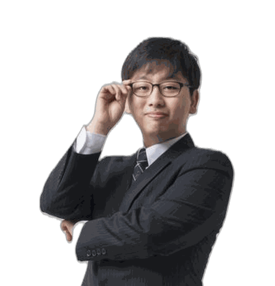

3년 동안 이 질문을 하셨을 겁니다.
그리고 아직도 시원한 답을 들으신 적이 없을 겁니다.
담임선생님께도, 설명회에서도, 커뮤니티에서도 물어보셨겠죠. 돌아온 건 대부분 “좀 더 지켜보자”, “안정적으로 가자”였을 겁니다. 그게 성의가 없어서가 아닙니다.
그 답이
원래 없기 때문입니다.
파인만 입시컨설팅 압구정
입시컨설팅 전담 · 경력 15년
지금 찾고 계신 그 숫자 — “이 성적이면 어디” — 올해 것은 아직 만들어지지 않았습니다.
원서접수가 끝나고, 최초 합격자가 나오고, 예비번호가 다 돌고, 최종 등록까지 마감돼야 그때 비로소 생깁니다. 12월 말입니다.
10명 뽑는 학과에서 최초 합격자 4명이 다른 대학에도 붙었다고 해봅시다. 그 4명이 다른 곳에 등록하면 4자리가 빕니다. 예비 1번부터 연락이 갑니다. 그런데 예비 1번도 이미 다른 대학에 등록했을 수 있죠. 다음 번호로 넘어갑니다. 한 자리가 비면 그 자리가 아래로, 또 아래로 이동합니다.
올해 누가 어디로 몰릴지, 누가 수능최저를 맞출지, 몇 명이 중복 합격으로 빠져나갈지 — 아직 아무것도 정해지지 않았습니다. 그래서 모든 학생에게 똑같이 적용되는 정답표는 존재할 수가 없습니다.
가장 흔하고, 가장 위험합니다. 저희가 3개년 등급컷을 전부 대조해봤습니다. 3년치가 모두 공개된 5,101개 모집단위에서 컷은 평균 0.64등급씩 움직였고, 5곳 중 1곳(19.4%)은 1등급 이상 흔들렸습니다. 작년 숫자 하나에 6장을 걸면, 다섯 번에 한 번은 완전히 다른 지도를 보게 됩니다.
그 글은 우리만 보는 게 아닙니다. 작년에 컷이 유난히 낮았던 곳은 올해 모두가 주목합니다. 몰리면 다시 오릅니다. 실제로 2025학년도 인서울 교과전형에서 경쟁률이 크게 떨어진 100개 학과 중 컷이 실제로 내려간 곳은 52개였습니다. 28개는 오히려 올랐습니다. 경쟁률 하나만 보고 판단하면 절반은 틀립니다.
요즘 “올해가 마지막이다, 재수는 절대 안 된다”는 말이 많이 돕니다. 그 공포가 지원을 실력보다 훨씬 아래로 끌어내립니다. 그런데 정작 2026학년도 수시 지원자 1,500명을 조사해보니 4명 중 1명(26.8%)은 안정을 아예 쓰지 않았습니다. 평균은 상향 2.52장 · 적정 1.99장 · 안정 1.18장이었습니다. 불안해서 낮춘 것도, 불안해서 안 쓴 것도 전부 근거가 없는 선택입니다.
가장 많이 듣는 말이고, 절반만 맞습니다. 같은 대학·같은 학과에서 두 전형의 컷을 나란히 놓아봤습니다. 특별전형은 모집단이 달라 전부 빼고, 일반전형만 1,319쌍입니다.
여기서 대부분 멈춥니다. “그럼 종합이 유리하네” 하고요.
인터넷에 돌아다니는 그 사례들, 저희가 직접 뜯어봤습니다. 격차가 2등급을 넘긴 곳은 1,319개 중 27개, 2%뿐이었습니다. 그 27개의 정체는 이렇습니다.
| 격차 2등급 초과 학과 | 비중 |
|---|---|
| 기초과학·공학 과학고·영재학교가 몰리는 곳 | 41% |
| 어문·국제 외고·국제고가 몰리는 곳 | 15% |
| 인문사회·경상 등 | 37% |
| 사범·간호·예체능·실용 | 7% |
절반 이상이 특목고·영재학교가 몰리는 학과였습니다. 영재학교는 법적으로 고등학교가 아니라서 학생부에 석차등급 자체가 나오지 않습니다. 과학고도 학년 정원이 작아 최상위권끼리 붙어도 등급 숫자가 커집니다. 이런 학생들이 섞인 컷은 일반고 아이의 좌표가 아닙니다.
서울대 학종 일반전형은 합격자의 28.3%가 영재학교 출신입니다. 같은 서울대 학종 지역균형은 508명 중 475명(93.5%)이 일반고였고, 외고·국제고·과학고·영재학교는 0명이었습니다.
이름표는 똑같이 ‘학생부종합’입니다. “학종이 유리한가”가 아니라 “어느 트랙인가”를 물어야 하는 이유입니다.
서울대 2026학년도 발표 결과 기준
대학마다 반영하는 교과·과목·학년 비중이 다릅니다. 전과목을 보는 곳, 국·영·수·사·과만 보는 곳, 일부 과목만 보는 곳이 전부 다릅니다.
담임선생님은 우리 아이를 가장 오래 보신 분입니다. 다만 이 작업에는 학교가 구조적으로 감당하기 어려운 부분이 있습니다. 역량의 문제가 아니라 구조의 문제입니다.
「진로교육법 시행령」이 정한 기준입니다. 한 분이 전교생의 진학 설계를 맡습니다.
한 학년만 3년 연속 맡는 구조가 아닙니다. 쌓인 감각이 이어지기 어렵습니다.
3개년 × 60개 대학 × 7,151개 모집단위를 대조하는 일은, 수업과 평가와 생활지도를 병행하며 할 수 있는 양이 아닙니다.
한 장씩 마음 가는 대로 채우면, 나중에 한 장을 바꿀 때 나머지 다섯 장이 전부 흔들립니다. 저희는 이 순서로 갑니다.
대학 이름을 적기 전에 세 줄부터 확정합니다. 전과목 등급과 주요교과 등급, 모의고사 2개·3개 영역 합, 그리고 3년간 이어온 관심의 축. 셋 다 애매하면 강한 걸 억지로 찾지 않고 약한 것부터 지웁니다.
뒤가 비어 있으면 불안해서 나머지를 조금씩 낮추게 되고, 결국 여섯 장이 전부 애매한 중간에 몰립니다. 안정 한 장을 먼저 못 박아야 나머지에서 과감해질 수 있습니다.
수능최저가 있는 전형은 지원자 상당수가 최저를 넘지 못합니다. 2025학년도 논술전형 최저 충족률은 18개 대학 평균 34.2%였습니다. 표면 경쟁률이 아니라 실제로 남는 사람 수로 다시 계산해야 합니다.
작년에 낮았던 곳은 몰립니다. 거꾸로 작년에 유난히 높았던 곳, 전형이 크게 바뀐 곳, 올해 신설되어 작년 데이터가 없는 곳 — 다들 피하는 자리에 틈이 생깁니다.
수시는 원서를 넣으면 끝나는 일이 아닙니다. 지원 라인을 잡고, 서류를 다듬고, 면접까지 가야 하나의 과정이 끝납니다. 그래서 한 달 과정으로 운영합니다.
이 세 가지가 있어야 판정이 정확해집니다.
2026년 7월 말부터 학원이 학교생활기록부를 받아 보관하거나 분석하는 것이 법으로 제한됐습니다. 대형 입시업체들이 수시 예측 서비스를 잇달아 접은 것도 그 때문입니다.
저희는 어떤 서류도 디지털로 옮기지 않습니다. 상담이 끝나면 학원에 남는 것은 없습니다. 기록은 학교가 쓰고, 해석은 저희가 합니다.
파인만 입시컨설팅 압구정
입시컨설팅 전담
경력은 강사 게시표(2026. 8. 1. 기준) 신고 자료에 따릅니다.
인터넷에서 컨설턴트를 찾으면 대부분 이력을 확인할 방법이 없습니다. 어디서 무엇을 해왔는지 알 수 없는데, 가격이 싼 것도 아닙니다. 한 번 만나고 끝나는 경우도 많습니다.
정영주 선생님은 압구정에서 입시 컨설팅만 전담해온 분입니다. 파인만 입시컨설팅 압구정 소속으로, 소속과 이름을 걸고 상담합니다. 그 경험 위에 3개년 7,151개 모집단위를 얹습니다.
그리고 한 번 보고 끝내지 않습니다. 지원 라인을 잡는 것부터 서류와 면접까지, 한 달 동안 같은 사람이 끝까지 봅니다.
합격한 대학보다, 어떻게 그 자리에 갔는지가 중요합니다. 아래는 정영주 컨설턴트가 담당한 개인 컨설팅 사례입니다.
두 사례 모두 학교가 권한 곳에도 합격했습니다. 학교 판단이 틀렸다는 이야기가 아닙니다. 한 장을 더 볼 여유가 있었고, 그 한 장이 결과를 바꿨다는 이야기입니다.
9월 7일이 지나면
바꿀 수 없습니다.
원서접수 전에 6장이 확정되어야 합니다.
한 명씩 3개년 데이터를 대조해야 해서 한 기수 정원이 정해져 있습니다.
| 구분 | 일정 |
|---|---|
| 접수 마감 | 8월 27일(목) |
| 개강 | 8월 27일(목) |
| 과정 | 4주 · 주 2회 (1회 245분) |
| 수시 원서접수 | 9월 7일(월) ~ 9월 11일(금) |
일정은 예약 상황에 따라 조정될 수 있습니다.
상담 예약 · 031-794-8158 이용 조건 · 교습비 확인
학교생활기록부
모의고사 성적표 (5·6·7월)
성적일람표
확인 후 그 자리에서 모두 돌려드립니다.
복사·촬영·스캔하지 않으며, 어떤 서류도 보관하지 않습니다.
교습과정 진학상담·지도 · 교습비 490,000원 (월 2,107분)